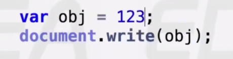

123.toString();能输出吗？
- 不能 由于数学运算中点”.”的优先级是最高的，所以浏览器将
123.toString();默认为浮点型，所以浏览器会报错，所以数字需要转换成变量浏览器才能识别，如var num = 123; num.toString()
var obj = {}; obj.toString();输出结果？
- [object Object] 这个toString()方法毋庸置疑的来源于原型链的终端
var num = 123; num.toString()输出结果?
- 输出字符串”123”
- 由问题2可以推出问题3应该输出[object Number]，为什么问题2结果是”123”？
num.toString();由于num是一个原始值，不能有方法，所以得经过包装类包装，即new Number(num).toString();，这个toString()方法是函数Number()的原型Number.prototype的，那么问题来了，问题2说toString()来源于原型链的终端，为什么toString()又来自于Number.prototype？
- 函数重写
- 针对问题4，其实Number()函数本身就有toString()方法,即
Number.prototype.toString = function(){}，Number()函数原型链终端也有一个toString()方法，即Number.prototype.__proto__ = Object.prototype;，自己有就用自己的，函数原型链终端显示的信息是没什么用的，所以它的子孙重写了方法
- 系统的函数重写
document.write(obj);并不是真正用于输出的方法，解释原因？

- 输出：123
- 输出：[object Object]
- 报错
document.write(obj);向页面输出信息时，是调用toString()方法，将obj的真实展示情况返回回来
- 如何证明
document.write(obj);调用的是toString()方法？
- 输出：’老邓身体好’